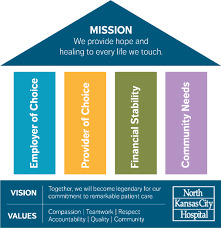

Our Mission
Afya Njema Hospital is committed to providing exceptional healthcare services to our community. We strive to create a welcoming and compassionate environment where patients receive the highest quality care, delivered with respect and empathy..
